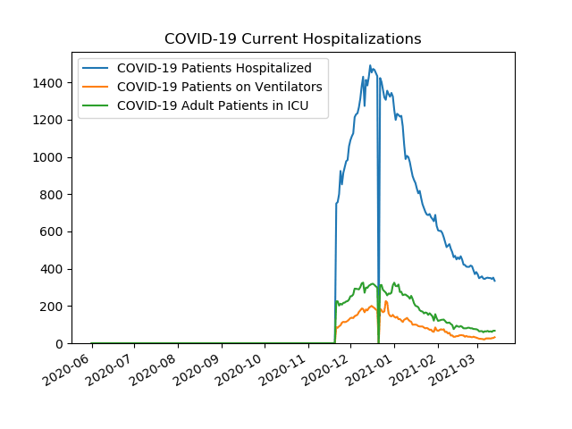
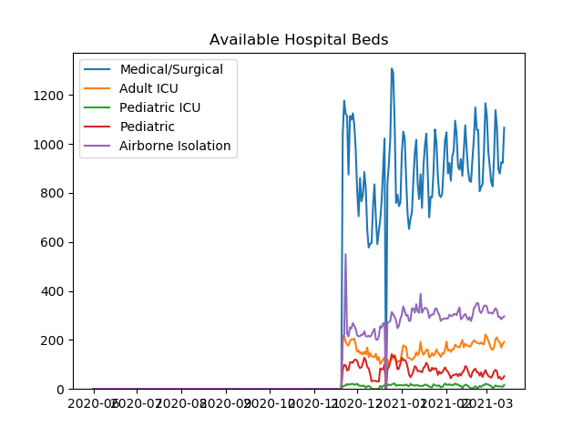
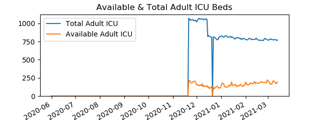
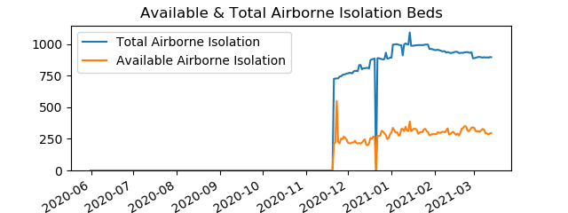
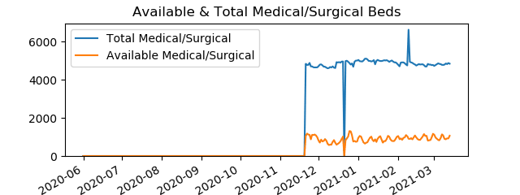

| Date | COVID-19 Patients on Ventilators | Ventilators Used | Ventilator Capacity |
| 20201121 | 86 | 288 | 1113 |
| 20201201 | 135 | 340 | 1239 |
| 20210101 | 142 | 450 | 1510 |
| 20210201 | 66 | 362 | 1525 |
| 20210301 | 27 | 314 | 1499 |
| 20210311 | 27 | 332 | 1503 |

Data is from PA Dept Of Health
|  |
| |
|  |
|  |
|  |
|  |
|  |
|  |